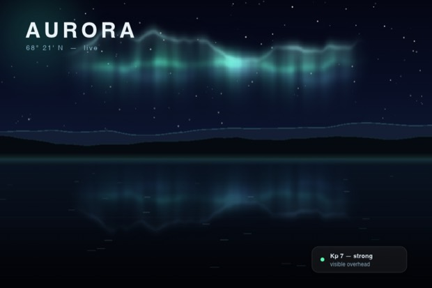
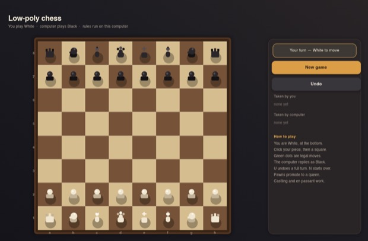
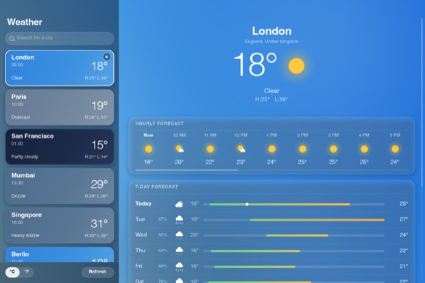
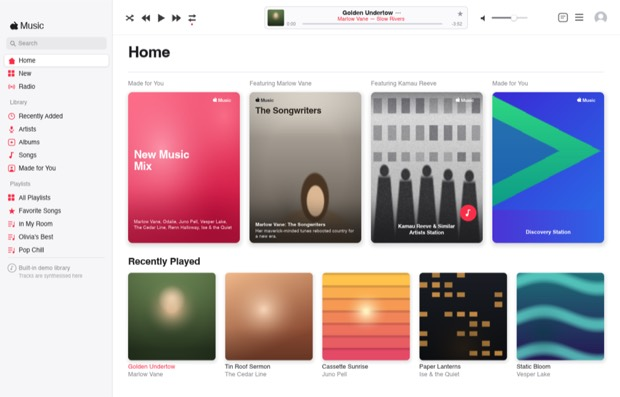
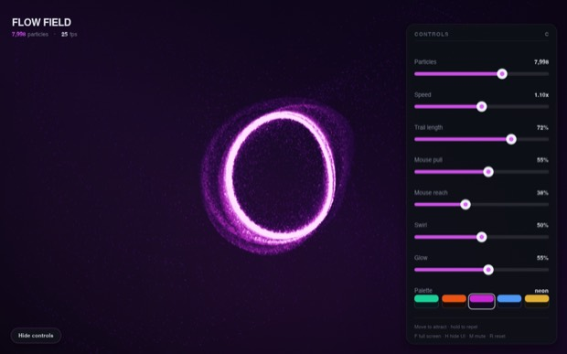

Hi
What are we buildingshipping?
Describe it. Krate turns it into one small file that opens on every desktop.
Recent projects
Rust compiled to a WebAssembly component, packed with its own source into one file that runs on Mac, Windows and Linux. No installer, no per-OS build, no signing queue, and it reaches nothing it did not declare.
Opens krate.tech in your browser. Krate never sees your password, and signing in is only needed to publish.
Enter this code on the page that just opened
····-····
This screen continues
by itself the moment you approve.





Apps made by describing them. Each one is a single small file that opens on every desktop.
Krate drives a coding agent you already have, or calls a model API with your own key. Nothing runs on our machines.
Hi
Describe it. Krate turns it into one small file that opens on every desktop.
Recent projects
Your app will appear here.
Reading your request
Krate needs one thing from you before it can build this.
Making your app
0:00 · a few minutes
· runs on Mac, Windows and Linux
That one didn't come together.
Files
Everything you have made on this computer. Open one to change it or send it on.
Who writes your apps. Krate works with the AI tools you already have, and never holds their keys.
Every .krate you make lands here.
krate commandkrate --help
lists it; the docs cover porting, capabilities and CI.The newest Krate, and what changed in it.
How Krate looks on this computer.
Who Krate has you as, and what you have made with it.
What you publish, and what other people have shipped.
What leaves this computer.
Something wrong? Tell us here, and the answer comes back to this window.
Every one runs on Mac, Windows and Linux, and asks your permission before it can do anything. Open one to see it run.
Reading the shared gallery…
What it is allowed to do
Checking what it can do…
Krate enforces this list. The app cannot do anything that is not on it, whatever its code says.
Details
Something went wrong and we want the real evidence, not a screenshot. Here is exactly what would leave this computer:
Your GitHub name goes with it so we can reply. Nothing else on this computer is read: no other projects, no files you did not attach, no keys. You can open the file yourself first.
This sends what is already in this session, your words below, and any answers you gave, to the person who makes Krate. There is no support team and no promised reply time: it is one person reading these, and a build that cannot be helped may get no answer at all. What it definitely does is show us the request that failed, which is how the tool gets better.
One app, and one change to it, on us. Every app you make is a file that is yours forever, whatever we do later.
Describe what you want and Krate's AI builds it. No account setup, no API key, nothing to install. You get one free app and one free change to it.
After that, add your own API key and keep making here as much as you like, or use Krate Studio on your own machine, free and unlimited with your own AI.
Making apps in the browser is switched off right now. This is on our side, not your account: your one free app and one free change to it are untouched. Krate Studio on your own machine is free and unlimited with your own AI.
A real person answers, in this same thread. Replies show up right here.
It runs on your computer, not in this tab. Which is true for you?
What should happen with what you just typed?
Publishing puts your name on the app, so it needs a quick sign-in. One click, and your browser approves it and the publish finishes by itself.
Enter this code on the page that just opened
····-····
Anyone with the link can open it. Publishing again later replaces it.
Screenshot
Logo optional
The manifest declares these and the runtime
enforces them. Check any app with
krate run app.krate --dump-caps.
The krate:* WIT world the component
imports. A build that reaches wasi:* is rejected before
it packs.
No source folder for this app.
Krate works with the AI you already have. Pick one that is ready, or follow its one-line fix. Its sign-in stays with that tool, and Krate never holds its keys.
Signed in somewhere else just now? Press Refresh. Prefer a terminal? Each fix's exact command is under its Terminal fold.
Paste a key and Krate calls the model directly. Nothing else to install.
Your account credits the apps you publish. Krate never sees your password. GitHub asks you directly.
Where your apps are saved